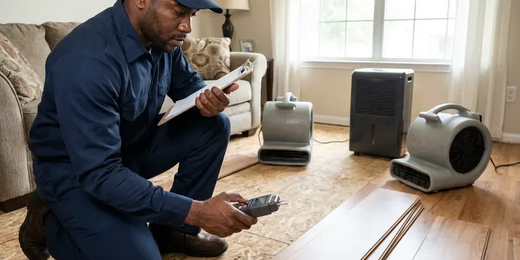

Water Line Repair in South Burlington, VT
Dealing with a leaking water line in South Burlington, VT can be a major headache. CKV Plumbing provides fast and reliable repair services to restore your plumbing.
- Same-Day Leak Detection
- Warrantied Work
- Skilled Technicians
- Guaranteed work
Expert Water Line Repair Services in South Burlington, VT.
Don't let a leaking water line cause bigger problems for your home or business, call us today.
Your Reliable Choice for Water Line Repair in South Burlington, VT
CKV Plumbing understands the problems of water line issues in South Burlington, VT. From corrosive soil to shifting foundations, our team is equipped to handle repairs that last, using durable materials suited for Vermont conditions.
Our expertise includes:
- Trenchless water line replacement
- Acoustic and tracer gas leak detection on buried mains
- Precise leak detection technology

Additional Plumbing Maintenance Services in South Burlington, VT
Our maintenance and specialty plumbing services in South Burlington, VT protect your home year-round and extend the life of every system.


Customers
Why Choose CKV Plumbing for Water Line Repair in South Burlington, VT?
Clay soils in river valleys drain poorly and can hold water against foundations, so sump pumps are common in low-lying homes. Choosing the right plumber for water line repair matters, and our experience means we fix it right the first time.
- Local Expertise, Our team understands the plumbing challenges faced by homeowners in Vermont, including issues related to soil movement and seasonal ground shifts.
- Local Knowledge, Our team understands the local plumbing codes and site conditions affecting water lines in South Burlington.
- Clear Pricing, You approve a written quote before we open the ground.
Citywide Coverage
Whether your meter sits at the curb, in an alley or behind a block wall, we can reach it. We serve homes, rentals and small commercial buildings throughout South Burlington and the surrounding area.
Experienced Team
Our plumbers are well trained and experienced in water line repair, dealing with everything from minor leaks to major breaks. They stay current on the latest techniques and local regulations.
Safety-First Approach
We call 811 before every dig so gas, electric and fiber lines are marked. Trenches are kept safe, and backfill is compacted to prevent sinking.
Trusted Certified South Burlington Plumbing Services Professionals
At CKV Plumbing, we take pride in providing certified plumbing services throughout South Burlington, VT. Backed by leading industry credentials, our experienced plumbers combine technical skill with genuine customer care. Whether it is repair, installation, or maintenance, we follow strict safety and quality standards to deliver lasting results you can trust.
Call Us Now PHCC Plumbing Contractor Recognition
PHCC Plumbing Contractor Recognition Better Business Bureau (BBB) Accreditation
Better Business Bureau (BBB) Accreditation Angi Certified Pro
Angi Certified Pro ISO 9001 Quality Management Certification
ISO 9001 Quality Management CertificationDependable Water Line Repair Services in South Burlington, VT
Galvanized Pipe Water Line Repair in South Burlington, VT
Many older homes in South Burlington, VT still have galvanized steel water lines, which are prone to corrosion, rust, and reduced water flow over time. While replacement is often the best long-term solution, we can provide targeted repairs for specific leaks in galvanized pipes where practical. Our plumbers are comfortable working with these older systems, carefully assessing the pipe's condition and recommending the most effective repair strategy to extend its life or plan for future replacement.

Main Water Line Replacement in South Burlington, VT
When repairs are no longer cost-effective due to extensive damage or persistent issues, a full main water line replacement may be necessary. This often applies to older homes in South Burlington, VT with original galvanized steel or polybutylene pipes that are prone to corrosion and leaks. We offer complete replacement services, upgrading your system with durable, modern materials like PEX or copper for a reliable water supply for decades to come. We handle all necessary permits and inspections.
Commercial Water Line Repair in South Burlington, VT
Businesses in South Burlington, VT rely on a steady and clean water supply. A commercial water line break can disrupt operations, lead to property damage, and even violate health codes. CKV Plumbing provides prompt and professional water line repair for commercial properties, understanding the need for minimal downtime. We handle larger diameter pipes and more complex systems, so your business's water service is promptly restored to full function, reducing the impact on your bottom line.
PEX and Copper Water Line Repair in South Burlington
Whether your home has modern PEX piping or traditional copper lines, our technicians are skilled in repairing both. PEX offers flexibility and corrosion resistance, while copper is known for its durability. We carry a full stock of matching fittings and tools for each material, ensuring a proper, code-compliant repair. Our experience extends to identifying common failure points for each type, such as fitting issues with PEX or pinhole leaks in older copper lines, frequent in homes with harder water.
Slab Leak Water Line Repair in South Burlington
Slab leaks, where water lines running beneath your home's concrete foundation leak, are a particularly challenging issue. Renovations in South Burlington frequently mix original plumbing with newer copper or PEX, so a thorough look at transitions and fittings is important. These leaks can undermine your foundation, leading to major structural damage. We use specialized listening devices and camera inspections to pinpoint slab leaks precisely and offer repair options including direct slab penetration, re-routing, or pipe lining. Addressing a slab leak quickly in South Burlington is crucial to prevent extensive, costly foundation damage.
Repair vs. Replace Your Water Line in South Burlington, VT
A single leak on a newer copper or PEX line is usually a simple spot repair. Repeat leaks, galvanized pipe or a line older than about 40 years usually justify full replacement. Spot repairs often run a few hundred dollars, while a full replacement costs more but resets the clock for decades. We show you the condition of the pipe we expose so you can make the call with actual information.
Galvanized Water Line Replacement in South Burlington, VT
Many homes built before the 1970s still have galvanized steel service lines that rust from the inside. Some Vermont wells carry iron, manganese or other naturally occurring minerals, so a water test is the first step before choosing treatment. Hard water speeds up scale buildup, which restricts flow and causes rust-colored water. Patching galvanized pipe seldom holds up because the surrounding pipe is just as corroded. We usually recommend replacing the full run from meter to house with copper or PEX, which restores pressure and stops repeat leaks.

Main Water Line Leak Repair in South Burlington
Most main line leaks show up as a soggy strip of yard, a sudden jump in your water bill or a meter dial that moves with every fixture off. We confirm the leak by isolating the house shutoff and watching the meter. Then we use ground microphones to locate the exact spot. A single section is cut out and replaced with repair couplings or a new length of pipe, and the line is pressure tested before backfill.
Water Line Repair Near Me in South Burlington, VT
When you search for "water line repair near me" in South Burlington, VT, you want a dependable local company that understands your needs. CKV Plumbing is rooted in the community, providing personal service that larger companies can't match. We're always just a short drive away, ready to respond to your plumbing emergencies promptly and efficiently.
We know how local water providers set up meters, curb stops and service connections. That local knowledge helps us identify whose side of the meter the leak is on right away. It also makes permit and inspection steps quicker when a full replacement is needed.
CKV Plumbing at a Glance
- Fully licensed plumbing team covering South Burlington, VT
- 24/7 emergency service with same-day scheduling
- Clear written estimates, no hidden fees
- 4.8-star rated by 553+ Vermont customers
South Burlington Map
South Burlington Information
- Population
- 21,043
- Area codes
- Local
- Service area
- South Burlington and communities within 40 miles
- Nearby
- Shelburne, Winooski, Burlington, Essex Junction
For homes in South Burlington, VT, soil movement and seasonal weather can place real stress on underground water lines, making durable and expertly performed repairs essential for long-term reliability.
Expert Services
Trust our professionals for reliable CKV Plumbing solutions in South Burlington, VT.
Our Specialized Plumbing Services in South Burlington, VT
At CKV Plumbing, we provide a complete range of plumbing services across South Burlington, VT. From leak detection to full system installations, our team ensures fast, precise, and affordable service for both residential and commercial properties. Explore our core services below:


How Our Water Line Repair Process Works in South Burlington, VT
Here is what happens from the moment you call until your water is back on at normal pressure.
Request a Quote
Call CKV Plumbing at (802) 209-5139 to describe your water line issue. We'll gather the needed information and schedule an inspection at your convenience.
Diagnosis & Plan
Our expert technician will arrive to perform a thorough diagnostic, pinpointing the exact location and cause of the water line problem. We'll then present you with a clear repair plan and upfront pricing.
Expert Repair
Once you approve, our team will proceed with the repair using high-quality materials and proven techniques. We work efficiently to restore your water service with minimal disruption.
Frequently Asked Questions About Water Line Repair in South Burlington
The cost of water line repair in South Burlington, VT varies significantly depending on the issue's complexity, location, pipe material, and whether excavation or trenchless methods are needed. Minor repairs might range from $300 to $800, while a major main line break or replacement could be anywhere from $1,500 to $6,000 or more. We always provide a detailed, upfront estimate after our initial assessment.
Water lines can leak or break due to several factors, including aging pipes (corrosion in galvanized steel or copper), shifting soil, tree root intrusion, high water pressure, ground freezing and thawing cycles, and accidental damage during excavation. Poor initial installation can also contribute to early failure.
We use only high-quality, reputable brands for all our water line repairs and installations. This includes trusted names in PEX like Uponor and Viega, and durable copper piping from manufacturers known for their reliability. Our fittings are always code-compliant and selected for their longevity in varied soil and water conditions, for a robust repair.
In most communities the water provider owns the meter and the pipe on the street side of it. The homeowner is responsible for the service line from the meter to the house. We confirm which side the leak is on before quoting you.
Common signs include a wet or unusually green patch of yard, a hissing sound near the meter, low pressure at every fixture and a water bill that climbs without explanation. Dirty or rusty water can also point to a damaged line. If your meter moves with all fixtures off, you likely have a leak.
Most spot repairs are finished in two to four hours. A full replacement usually takes one day, and trenchless jobs are often done in a day as well. Water is typically back on the same day.
Most standard water line repairs can be completed within a few hours to a full day, depending on the severity and accessibility of the leak. More complex issues, like trenchless pipe replacement or extensive excavation for a main line, might take 1-3 days. We always aim for the fastest, most efficient fix without compromising quality.
Some Vermont wells carry iron, manganese or other naturally occurring minerals, so a lab test is the first step before choosing treatment. Clay soils in river valleys drain poorly and can hold water against foundations, so sump pumps are common in low-lying homes. Tree roots can also crush or wrap shallow lines, and mineral scale chokes older pipe over time. Aging galvanized pipe is the most common culprit in older homes.
What People Are Saying About Our Plumbing Experts?

Laura S.
I scheduled a water heater replacement, and the team made the process smooth and affordable. The new unit works perfectly, and they cleaned up after completing the job.
Water Heater Replacement · Winooski, VT
Robert G.
The trenchless sewer replacement saved our front yard. They walked us through the camera inspection footage first so we knew exactly what we were paying for.
Sewer Line Replacement · Shelburne, VTJames P.
Our commercial plumbing system had a leak under the sink, and CKV Plumbing handled it professionally. The plumbers arrived quickly and restored everything without disruption to our customers.
Commercial Plumbing · Burlington, VT
Mark T.
When our office needed drain cleaning, CKV Plumbing provided quick, reliable service. The plumber arrived on time and made sure every drain flowed perfectly before leaving. Very satisfied.
Drain Cleaning · Shelburne, VT
Patricia H.
We had a slab leak that two other companies could not find. CKV Plumbing located it in under an hour, explained our options, and the price matched the quote to the dollar.
Slab Leak Repair · Burlington, VTSofia M.
Two new toilets installed in one visit, no mess left behind, and the tech even adjusted a faucet he noticed was dripping. Fair pricing and really friendly.
Toilet Installation · Burlington, VT